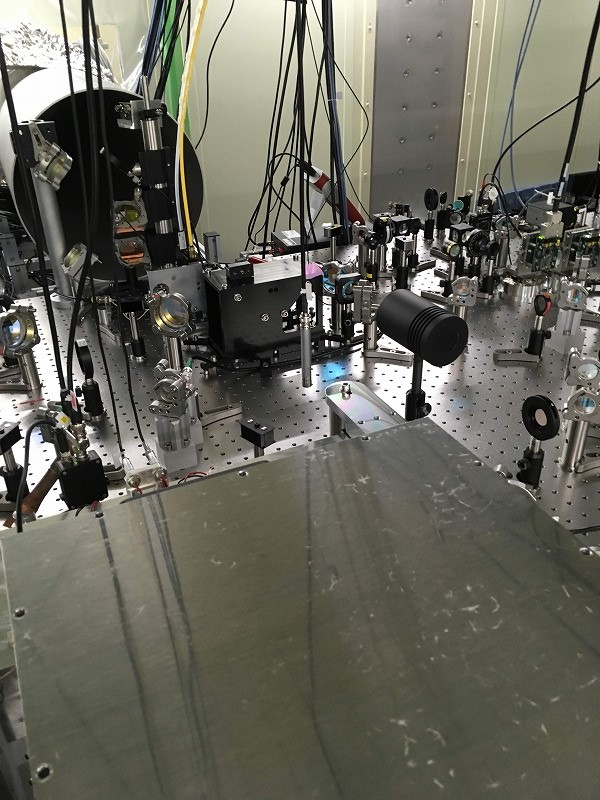

<h2>K1:PEM-MIC_PSL_TABLE_PSL4_Z</h2>

<ul>
  <li><b>Sensor :</b> Microphone </li>
  <li><b>Observable :</b> Sound [Pa] </li>
  <li><b>Typical vable :</b> &mu;= 0 Pa, &sigma; = ? Pa </li>
  <li><b>Frequendy range :</b> ?? - ?? Hz</li>
  <li><b>Location :</b> Above the PSL table, from the ceiling</li>
</ul>

<h3>Sample plot : </h3>
 <br>

<h3>Picture : </h3>
 <br>
